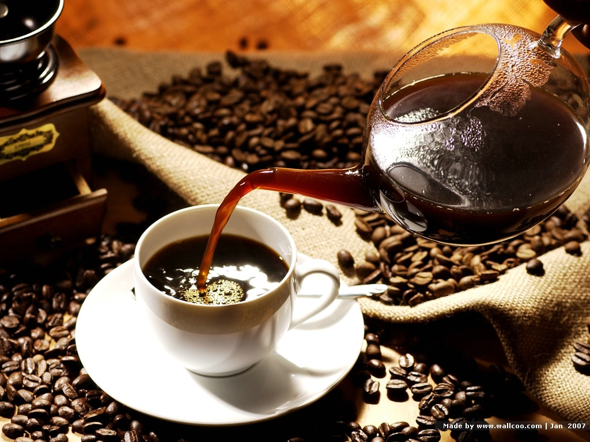

We have a range of coffees to match your mood
At Uncommon Grounds, we don't subscribe to a "one-roast-fits-all" policy. To achieve optimum coffee flavor, we roast each of our coffees at slightly different roast degrees to bring out each bean's full potential. You'll immediately taste the difference. Light roasts are livelier, laced with subtleties and sweet nuances. Darker roasts are rich and velvety, grounded in heavier tones and smoky hints.
Our coffees are arranged in order of roast degree
- Kenya-Sweet, blackberry, crisp, clean
- Daybreak Morning Blend-Sweet, fruity, nutty
- Guatemala El Socorro-Caramel, jasmine, fruity
- Colombia-Smooth, sweet, caramel, nutty
- Costa Rica-Chocolate, cherry, bold